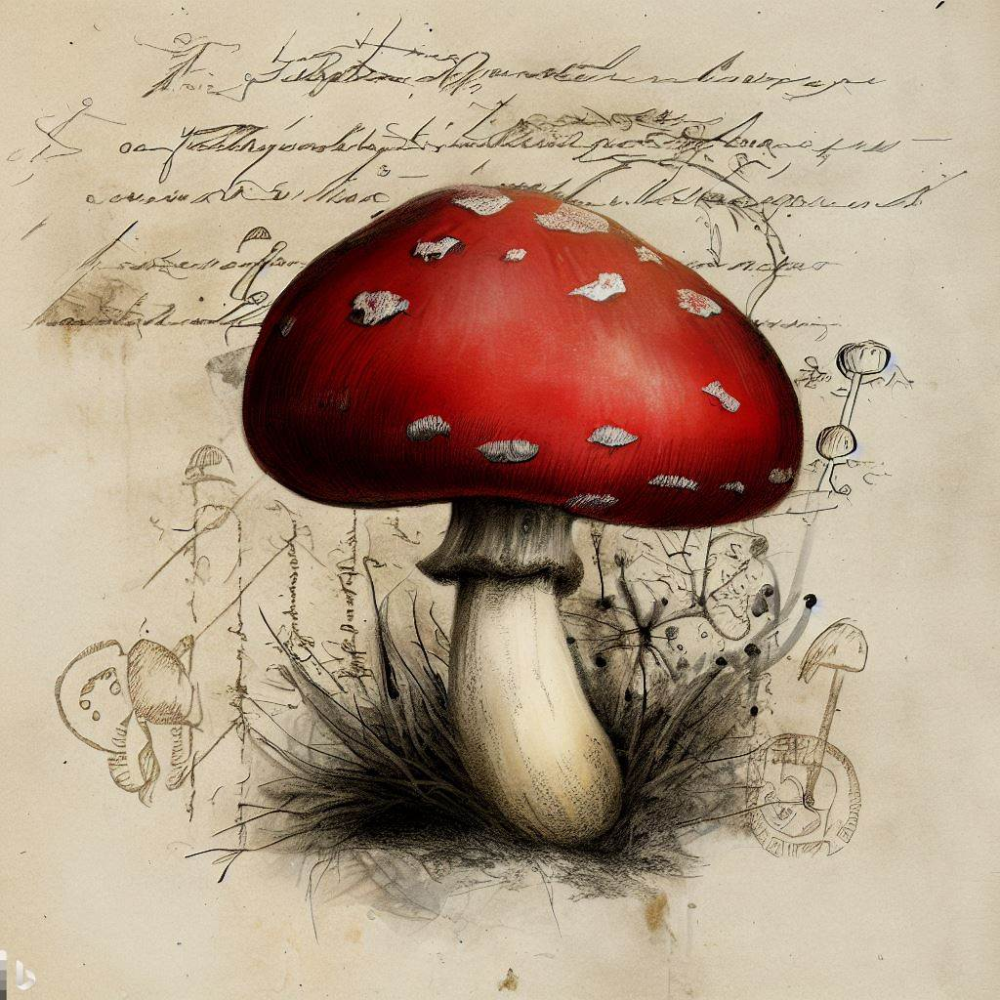

Deze paddenstoel met rode hoed kan zo groot worden als een klein schaaltje. Het eten ervan kan leiden tot vergiftigingsverschijnselen, maar de ernst hiervan valt meestal mee (1d4 poison damage). Een voorzichtige kruidendokter kan er helende drankjes mee brouwen.
| Gather Rarity: | Common (DC 10) |
| Gathering: | Herbalism kit (DC 10) |
| Quantity: | 2d4 stalks |
| Location: | Swamps, Forests |
| Pricing rarity: | Common (2cp) |
| Linktype | |||||||
|---|---|---|---|---|---|---|---|
| Herbalism kit | link | 2023.09.29 | |||||